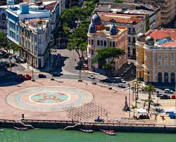

Sobre o Marco Zero
O Marco Zero é um dos principais pontos turísticos da cidade do Recife, localizado no coração do centro histórico da cidade. É um local de grande importância histórica e cultural.
História
O Marco Zero foi inaugurado em 1938 para marcar o ponto exato de fundação da cidade do Recife em 1537. É um local onde muitos eventos culturais e festivais acontecem ao longo do ano.
Atrações
Além do próprio Marco Zero, os visitantes podem desfrutar de uma vista deslumbrante do Rio Capibaribe, fazer passeios de barco, explorar a arquitetura histórica circundante e saborear a culinária local em restaurantes próximos.
Como Chegar
O Marco Zero está localizado no centro do Recife, de fácil acesso de táxi, ônibus ou a pé a partir de muitos pontos da cidade.